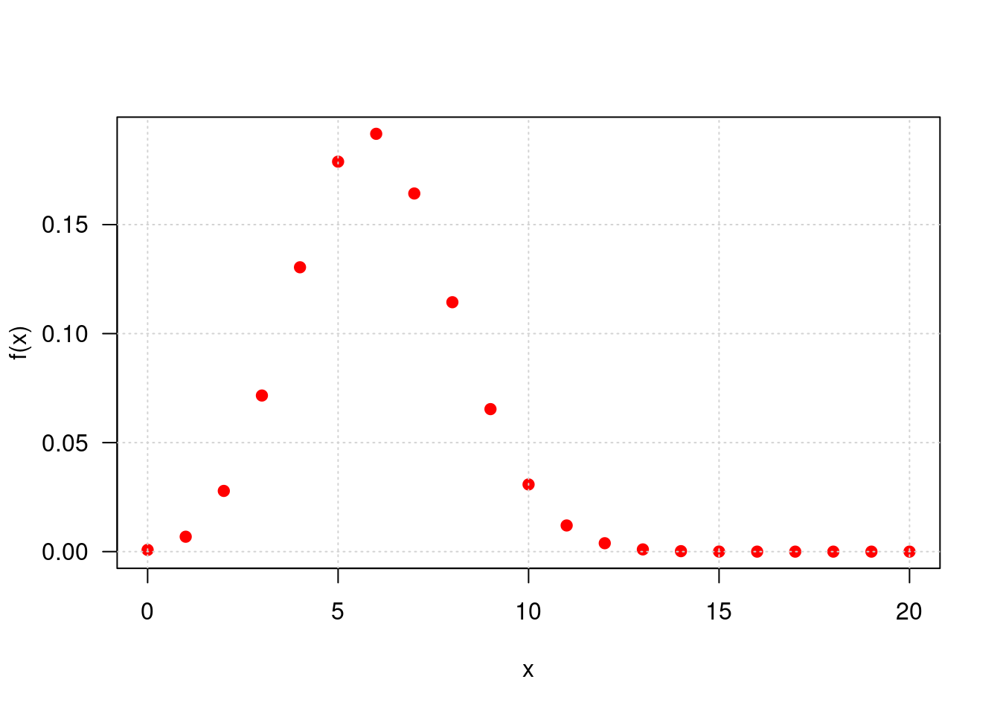
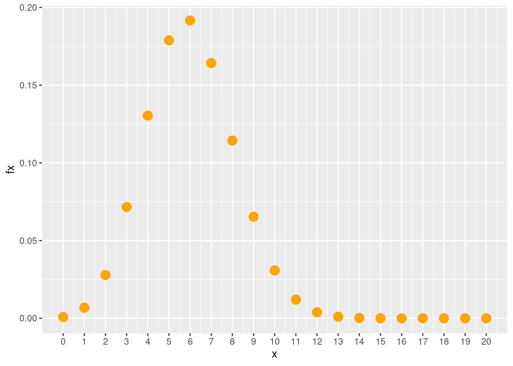
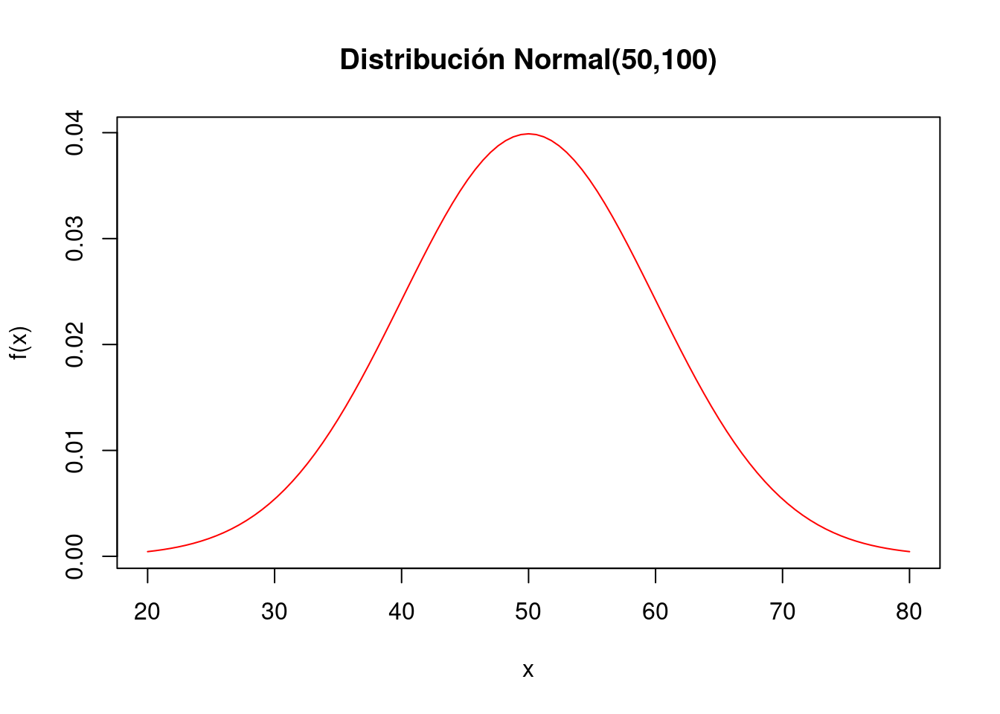
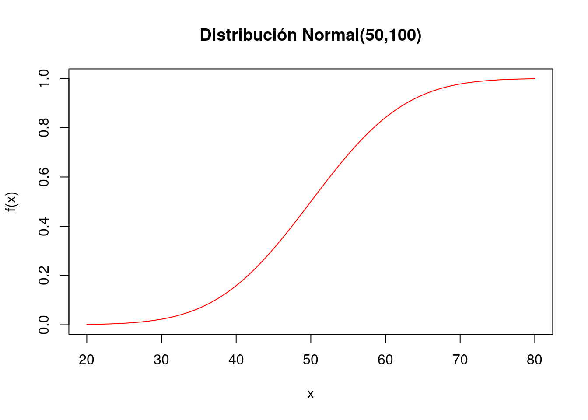
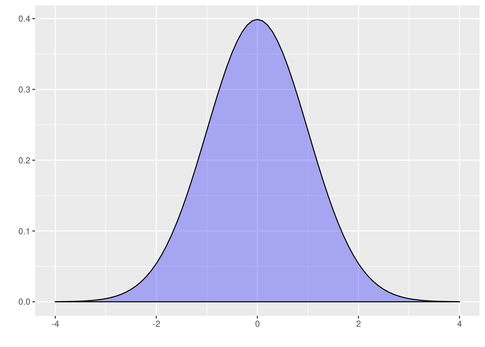
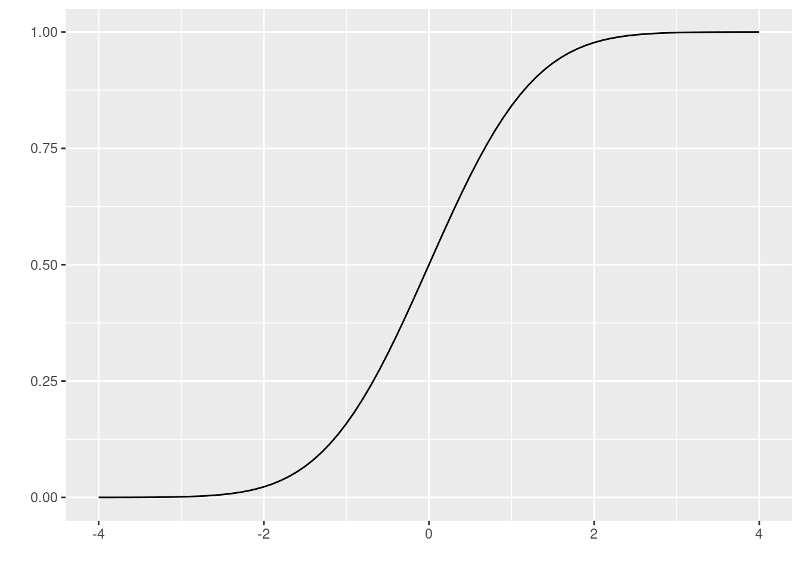
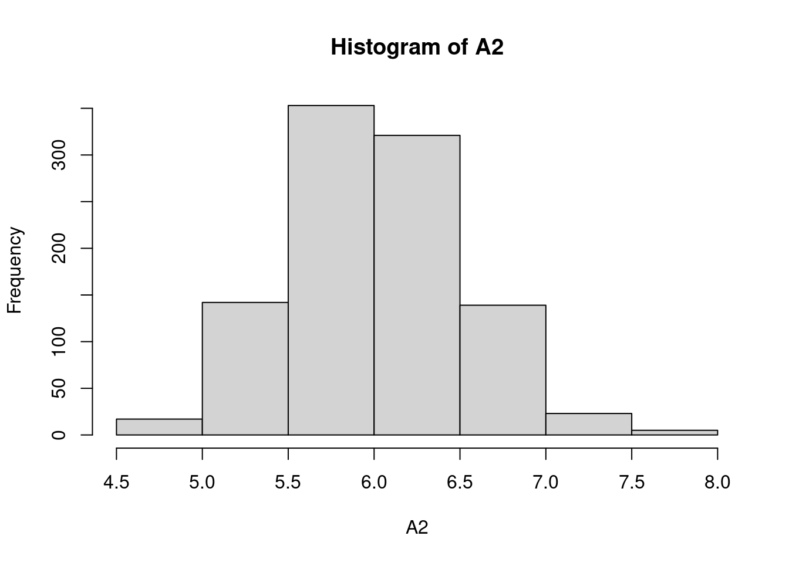
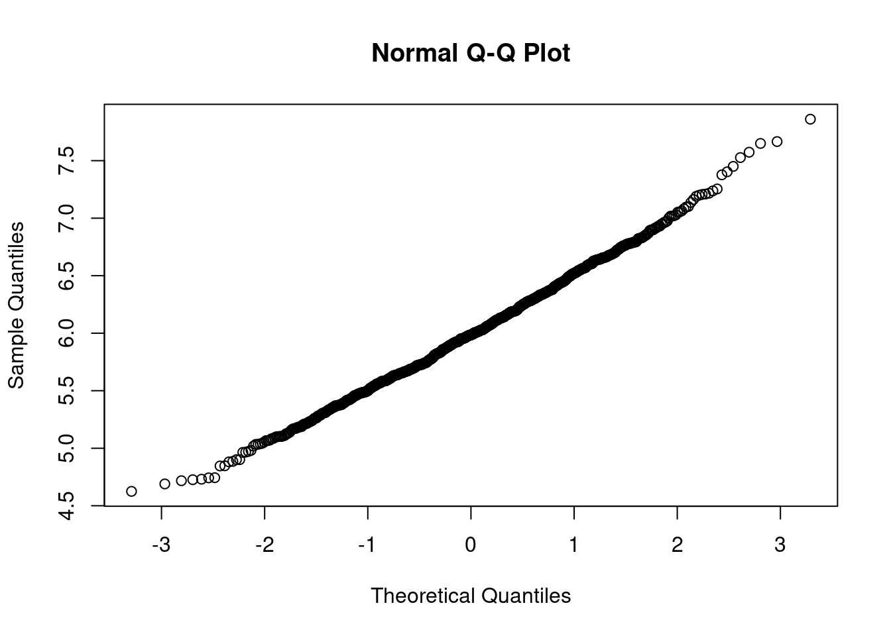

Código
Módulo 1- Unidad 1.1
dgonzalez
EN CONSTRUCCION
Funciones modelos
Código R
Existe un grupo de modelos identificados para las variables aleatorias tanto discretas como continuas que son utilizadas con frecuencia en diferentes contextos. A continuación se relacionan los principales modelos:
Modelos discretos:
- Bernoulli,
- binomial,
- Poisson,
- geometrico,
- hipergeometrico,
- binomial negativo.
Modelos continuos:
- uniforme
- normal
- exponencial
- lognormal
- gamma
- beta
- Weibull
- Cauchy
- Gumbel
- t-Student
- Ji-cuadrado
- F de Fisher
- Empirica o Kernel
En \(R\) los nombre de las funciones diseñadas para los cálculos requeridos están conformadas por dos partes:
La primera parte es una letra que identifica el propósito de la función.
d : función de distribución de probabilidad \(f(x)= P(X=x)\), para el caso discreto. En el caso de las variables continuas representa la función de densidad de probabilidad \(f(x)\)
p : función de probbilidad acumulada \(F(x) = P(X \leq x)\)
q : percentil \(X_p\)
r : generador de números aleatorios
La siguiene tabla presenta estas las funciones para los principales modelos tanto discretos como continuos
| modelo | \(F(x)\) | \(X_{p}\) | \(f(x)\) | aleatorio |
|---|---|---|---|---|
| binomial | pbinom | qbinom | dbinom | rbinom |
| gometrico | pgeom | qgeom | dgeom | rgeom |
| hipergeometrico | phyper | qhyper | dhyper | rhyper |
| Poisson | ppois | qpois | dpois | rpois |
| binomial negativo | pnbinom | qnbinom | dnbionom | rnbinom |
| beta | pbeta | qbeta | dbeta | rbeta |
| Cauchy | pcauchy | qcauchy | dcauchy | rcauchy |
| exponencial | pexp | qexp | dexp | rexp |
| gamma | pgamma | qgamma | dgamma | rgamma |
| lognormal | plnorm | qlnorm | dlnorm | rlnorm |
| uniforme | punif | qunif | dunif | runif |
| Weibull | pweibull | qweibull | dweibull | rweibull |
| t-Student | pt | qt | dt | rt |
| Ji-cuadrado | pchisq | qchisq | dchisq | rchisq |
| F | pf | qf | df | rf |
En R los nombres de las funciones diseñadas para los cálculos requeridos están conformadas por dos partes: la primera parte con el propósito de la función (primera letra) y la segunda parte hace referencia al modelo a utilizar (d binom para el calculo de probabilidad de una variable aleatoria con distribución binomial)
En cada caso si no recuerda las sintaxis de la función puede hacer uso de las ayudas de R así:
help("pbinom")| p | función de distribución acumulada \(F(x)\) |
| q | percentil |
| d | densidad de probabilidad \(P(X=x)\) |
| r | variable aleatoria |
 |
Sea una variables con distribución binomial con parámetros \(n=20\) y \(p=0.30\) , lo cual se puede simbolizar como : \(X\sim b(x; 20,0.30)\) |
En este caso se requieren realizar los siguientes procesos:
- Calcular la probabilidad de \[ P(X=7) = \dbinom{20}{7} 0.30^{7} (10.30)^{(20-7)}\]
dbinom(7, 20, 0.30)[1] 0.164262- Calcular la probabilidad acumulada \[P(X \leq 7) = \displaystyle\sum_{x=0}^{x=7} \dbinom{20}{x} 0.30^{x} (1-0.30)^{(20-x)}\]
pbinom(7, 20, 0.30)[1] 0.7722718- Construir la tabla de los valores de \(f(x)\) y \(F(x)\) para todo el rango de la variable
x=0:20 # genera secuencia 0 al 20
fx=dbinom(x, 20, 0.30) # evalua f(x)
fx=round(fx,4) # redondea a 4 decimales
Fx=pbinom(x, 20, 0.30) # evalua en F(x)
Fx=round(Fx,4) # redondea a 4 decimales
data.frame(x,fx,Fx) # construye tabla x fx Fx
1 0 0.0008 0.0008
2 1 0.0068 0.0076
3 2 0.0278 0.0355
4 3 0.0716 0.1071
5 4 0.1304 0.2375
6 5 0.1789 0.4164
7 6 0.1916 0.6080
8 7 0.1643 0.7723
9 8 0.1144 0.8867
10 9 0.0654 0.9520
11 10 0.0308 0.9829
12 11 0.0120 0.9949
13 12 0.0039 0.9987
14 13 0.0010 0.9997
15 14 0.0002 1.0000
16 15 0.0000 1.0000
17 16 0.0000 1.0000
18 17 0.0000 1.0000
19 18 0.0000 1.0000
20 19 0.0000 1.0000
21 20 0.0000 1.0000- Generar 15 números aleatorios a partir de esta distribución
rbinom(15,20,0.30) [1] 6 8 6 6 4 7 7 11 6 6 8 4 5 7 6- Construir la gráfica de la función de distribución de probabilidad \(f(x)\) para \(X\)
plot(x,dbinom(x,20,0.30), pch=19,las=1,
ylab="f(x)", col="red")
grid()
- Construir la gráfica de la función de distribución acumulada \(F(x)\)
x=0:20
plot(x,pbinom(x,20,0.30), pch=19, "s",
ylab="f(x)", col="red")
- Para construir una gráfica mas elaborada se puede utilizar el siguiente código
library(ggplot2)
x=0:20
fx=dbinom(x,20,0.30)
dat=data.frame(x,fx)
ggplot(dat) + geom_point(aes(x, fx),colour = "orange", size = 4) +
scale_x_continuous(limits = c(0, 20),
breaks = 0:20,
labels = c('0','1','2','3','4','5','6','7','8','9','10','11','12','13','14', '15','16','17','18','19','20'))
 |
Ahora supongamos que se tiene una variable continua con distribución normal, con media 50 y varianza 100, es decir desviación estándar 10, lo cual se puede representar como \(X\sim N(50,100)\). |
En este caso vamos a hallar los siguientes valores:
- Calcular la probabilidad de que un valor de \(X\) sea menor o igual a 70, \[P(X<70) =\displaystyle\int_{-\infty}^{70} \dfrac{1}{\sqrt{200 \pi }} \exp{\frac{1}{200 }(x-50)^{2}} \:dx\] \
pnorm(70,50,sqrt(100))[1] 0.9772499- Calcular la probabilidad de que la variable sea mayor a 70: \(P(X>70)\)
pnorm(70,50,sqrt(100),lower.tail=FALSE)[1] 0.02275013- Genere 10 números aleatorios de la variables \(X\)
rnorm(10,70,sqrt(100)) [1] 77.91053 62.23859 62.63797 52.94710 59.33609 70.53828 72.67212 68.26983
[9] 68.98623 68.09381- Generar la gráfica de la función de densidad de la variable \(X\), \(f(x)\)
curve(dnorm(x,50,sqrt(100)), from=20, to=80,
col="red", main="Distribución Normal(50,100)",
ylab="f(x)")
- Generar la gráfica de la función de probabilidad acumulada de la variable \(X\), \(F(x)\)
curve(pnorm(x,50,sqrt(100)), from=20, to=80,
col="red", main="Distribución Normal(50,100)",
ylab="f(x)")
- Para realizar un gráfico mas elaborado podemos utilizar el siguiente código

# install.package("ggfortify")
library(ggfortify)
ggdistribution(pnorm, seq(-4, 4, 0.1), mean = 0, sd = 1)
Por otro lado el proceso de simulación de variables estadísticas esta relacionado con los experimentos llamados de Montecarlo, a continuación se describe brevemente su origen.
Método de Montecarlo
Es un método no determinista o estadístico numérico, usado para aproximar expresiones matemáticas complejas y costosas de evaluar con exactitud. El método se llamó así en referencia al Casino de Montecarlo (Mónaco) por ser “la capital del juego de azar”, al ser la ruleta un generador simple de números aleatorios. El nombre y el desarrollo sistemático de los métodos de Montecarlo datan aproximadamente de 1944 y se mejoraron enormemente con el desarrollo de la computadora.
El uso de los métodos de Montecarlo como herramienta de investigación, proviene del trabajo realizado en el desarrollo de la bomba atómica durante la Segunda Guerra Mundial en el Laboratorio Nacional de Los Álamos en EE. UU. Este trabajo conllevaba la simulación de problemas probabilísticos de hidrodinámica concernientes a la difusión de neutrones en el material de fisión. Esta difusión posee un comportamiento eminentemente aleatorio.
(tomado de Wikipedia)
Como ejemplo se presentan los siguientes problemas tomados de Navidi.
Ejemplo 3
Se fabrican placas rectangulares cuyas longitudes en pulgadas se distribuyen como \(N(2.0; 0.01)\) y cuyos anchos se distribuyen \(N(3.0; 0.04)\). Suponga que las longitudes y los anchos son independientes. El área de una placa esta dada por \(A=XY\).

Utilice una muestra simulada de tamaño \(1000\) para estimar la media y la varianza de \(A\).
Estime la probabilidad de que \(P(5.9 <A<6.1)\).
Construya una gráfica de distribución normal \((qqplot)\) para el área. ¿El área de una placa sigue una distribución normal?
Problema 3 capitulo 4 Navidi(2006)
Solución
X2=rnorm(1000,mean=2.0,sd=0.1) # generación de números aleatorios de X
Y2=rnorm(1000,mean=3.0,sd=0.2) # generación de números aleatorios de Y
Z2=data.frame(X2,Y2) # generación de matriz de X,Y
A2=apply(Z2,1,prod) # área de la placa A=XY
mediaA=mean(A2) # media del vector de áreas
varianzaA=var(A2) # varianza del vector de áreas
B2=as.numeric(A2>5.9 & A2<6.1) # generación de variable de 0,1. Con valor de 1 cundo se cumple la condición y cero en otros casos
Pro3c=sum(B2)/1000 # calculo de la probabilidad
hist(A2) # histograma del valor de las áreas
qqnorm(A2) # gráfico de normalidad del área
summarytools::descr(A2)Descriptive Statistics
value
N: 1000
value
----------------- ---------
Mean 6.00
Std.Dev 0.50
Min 4.62
Q1 5.65
Median 5.99
Q3 6.33
Max 7.86
MAD 0.50
IQR 0.68
CV 0.08
Skewness 0.21
SE.Skewness 0.08
Kurtosis 0.10
N.Valid 1000.00
Pct.Valid 100.00App Probability Distributions
Esta aplicación permite calcular probabilidades desde el celular